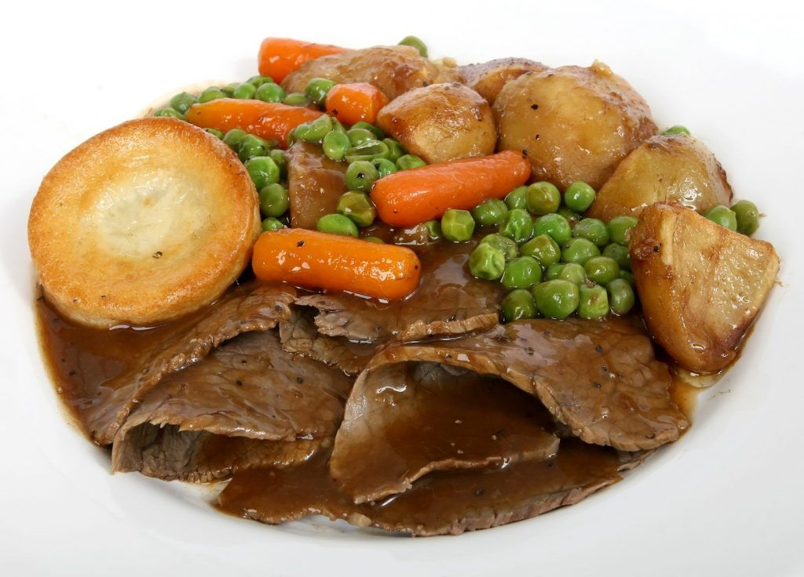
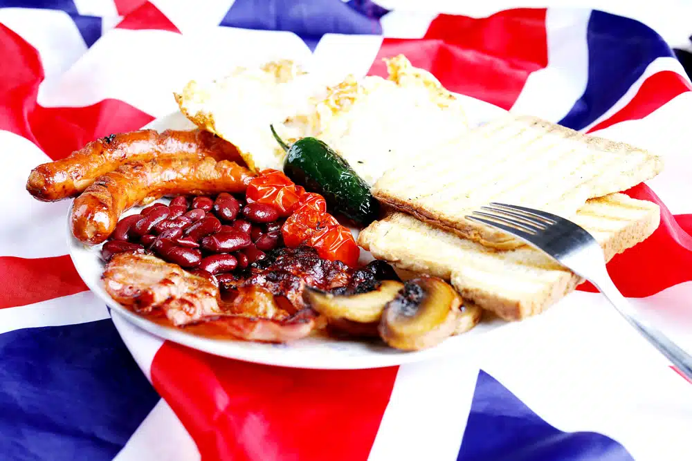
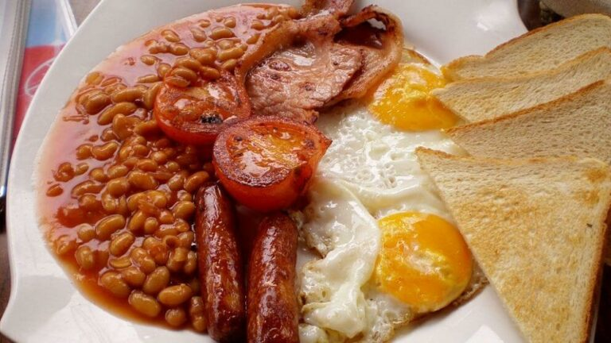
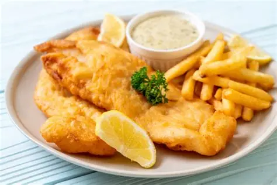
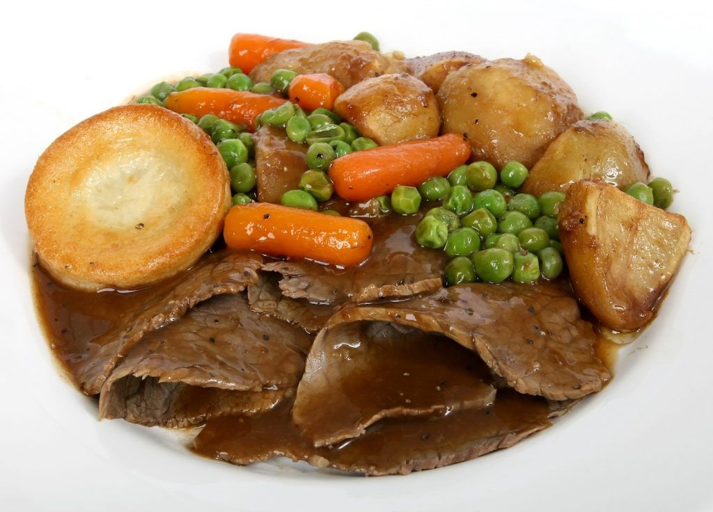
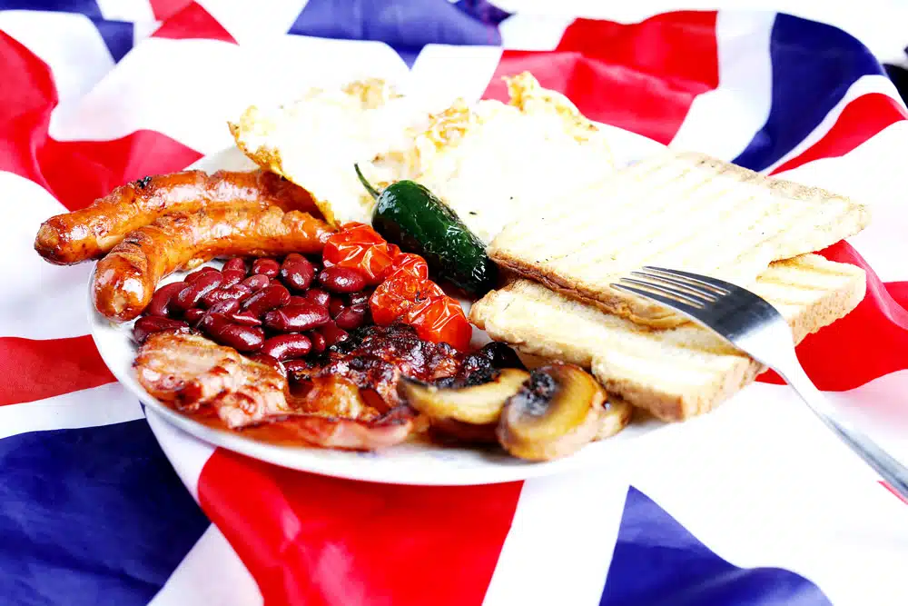
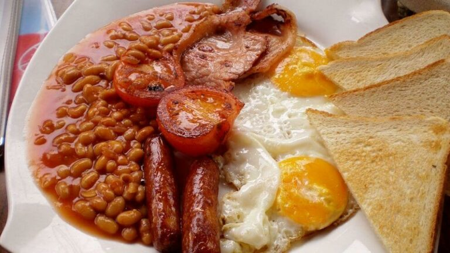
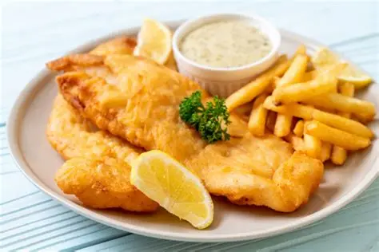

 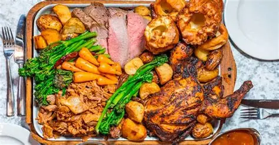
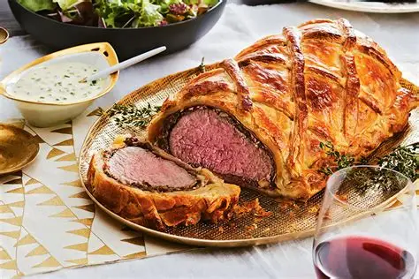
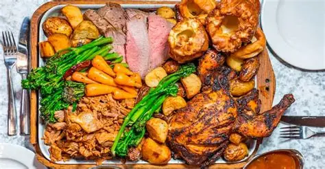
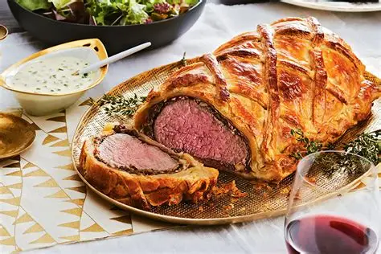
O Reino Unido oferece uma gastronomia rica, que combina tradições antigas com influências modernas. De pratos típicos como fish and chips e roast dinners a doces clássicos como scones e puddings, a culinária britânica reflete a história e a cultura do país. Além disso, restaurantes e mercados contemporâneos mostram como tradição e inovação convivem na cozinha britânica.
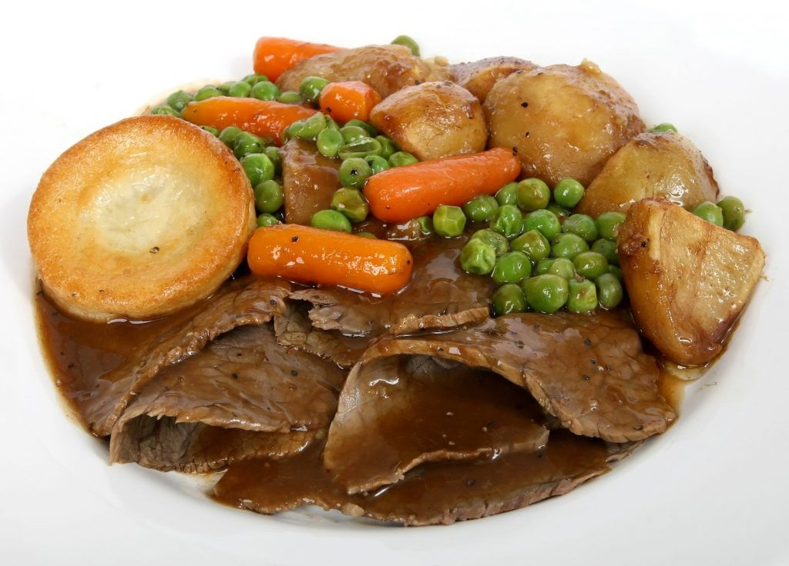
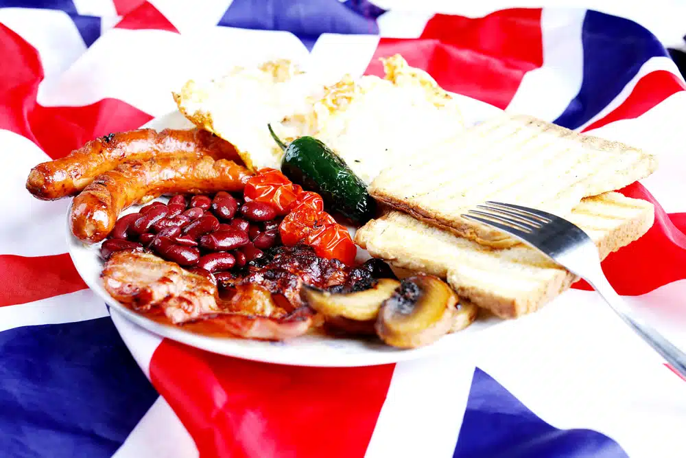
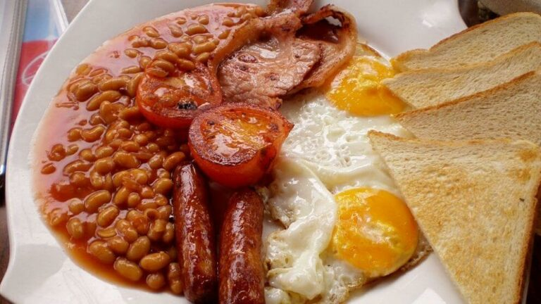
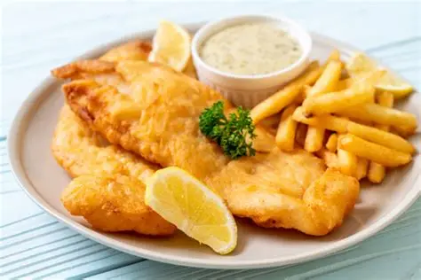
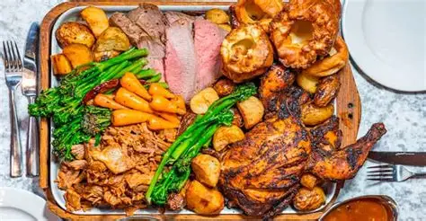
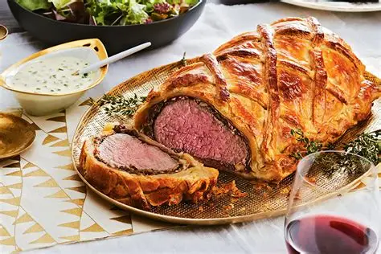